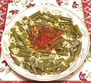

|
Green Bean PaprikasHungary - Balatoni Zöldbab Paprika | ||||
| Makes: Effort: Sched: DoAhead: |
6 side *** 1-1/4 hrs Note-3 |
Green beans as you have never known them. A hearty side dish for hungry Hungarians, it can easily serve as a vegetable main dish in our "information culture". | |||
|
1-1/2 1/3 1/4 5 1 1/3 1 1 1 1 1/2 |
# c t oz T c t t T c c |
Green Beans Rice Salt Onion Parsley Lard or Oil (1) Paprika Salt Vinegar Water Sour Cream |
If you really need it ol vegetarian, use avocado oil in place of lard - it's the richest of the oils. For my modifications see Note-2 and Note-3 for an optional method. Prep: - (25 min)
|